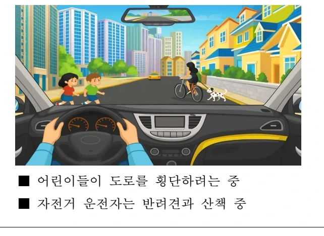

802. Hai phương pháp lái xe an toàn nhất trong tình huống lái xe trên đường hẻm trong khu vực đô thị?

- ①Vì có thể có xe đạp hoặc chó đi dạo bất ngờ đi ra giữa đường, nên phải chú ý.
- ②Sử dụng còi để báo hiệu xe của bản thân đang đi tới rồi cứ thế đi.
- ③Giảm tốc độ vì trẻ em có thể đột ngột đi ra giữa đường.
- ④Tăng tốc tránh xe đạp và nhanh chóng vượt qua.
- ⑤Dùng đèn pha trước báo hiệu có xe đang đến để các xe đi ngược chiều chú ý.
Xem đáp án
Đáp án
① Vì có thể có xe đạp hoặc chó đi dạo bất ngờ đi ra giữa đường, nên phải chú ý.
③ Giảm tốc độ vì trẻ em có thể đột ngột đi ra giữa đường.
Căn cứ
Đường sau trong khu vực trung tâm thành phố dễ xảy ra tai nạn do có sự kết hợp của nhiều loại phương tiện giao thông khác nhau, bao gồm người đi bộ, xe đạp và vật nuôi. Người lái xe phải lái xe cẩn thận để tránh những rủi ro này. Đặc biệt, trẻ em có thể bất ngờ nhảy ra đường nên giảm tốc độ và lái xe chậm (③). Mặt khác, hành vi đe dọa người đi bộ hoặc người lái xe khác bằng cách bấm còi, đèn pha không cần thiết (②, ⑤) và tăng tốc để vượt nhanh (④) vừa vi phạm pháp luật, vừa mất an toàn. Vì vậy, câu trả lời đúng là ① và ③.
Phần căn cứ là bản dịch máy để tham khảo.